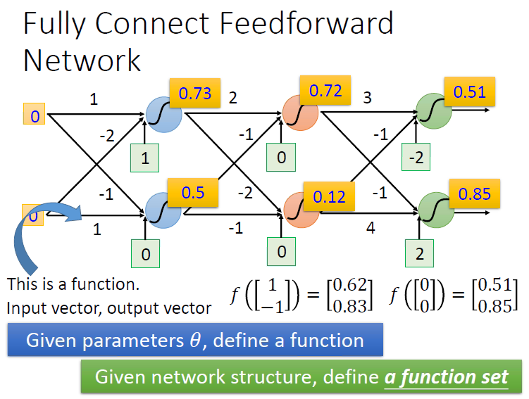

深度学习应该了解的内容。
深度学习的应用领域
深度学习得到越来越快的发展，这是因为深度学习是最有希望解决一些普通算法难以解决的问题，让我们来看一看都有哪些问题是目前还没有解决，但是有望可以借助深度学习方法的进步解决的。
黑白图像的自动着色
我们都知道，把彩色图像变成黑白图像很容易，但是要把黑白图像变成彩色图像就不那么容易了（颜色信息从那里来？），这个问题以前都是靠手工着色的方式解决的，但是这样的方法费时费力还需要专业的人才。
目前使用ImageNet训练的多层的卷积神经网络可以达到的水平如下图：
自动为电影添加声音
为无声电影添加配音应该是一个更加困难的问题，但是深度学习的方法已经做出了一些有益的尝试。现在能够做到的是一些简单的动作的配音，例如视频中出现一个敲击的动作，可以配上一个敲击的声音，当然，这需要大量的训练样本去学习什么样的场景对应什么样的声音。这个方面主要是CNN和LSTM.
自动机器翻译
自动翻译文字
从一种语言翻译到另外一种语言，这样的软件早就有，而且有了很多年了。但是翻译的水平始终无法与人工翻译相提并论。深度学习技术的发展有希望改变这一点，自动机器翻译的水平不断提高，直逼人工翻译的水平。这个领域使用的神经网络是Stacked networks of large LSTM recurrent neural networks.
翻译图像中的文字
识别图像中的文字一直以来都是一个比较实际的问题，在各种场合下都有应用。最常见的比如车牌的识别，名片的识别，信用卡号码的识别。以前用图像处理的算法解决这个问题的时候，大多是局限在某一个具体的场景，例如车牌识别，图像大小基本固定，背景颜色基本固定，文字只有很有限的几个，这种情况下普通的算法也能得到很好的效果。但是实际应用的时候往往情况比这个复杂的多，这个领域使用的神经网络主要是CNN.

物体分类和检测
识别一个图像中的物体的类别，或者各个物体的类别也是意见很困难的事情。因为类别往往有无穷多种。
Object Classification
比如判断一副图像属于1000个类别中的哪一类。目前ImageNet上已经能够做到很高的准确率。
Object Detection
识别图像中的各个对象并标记出来。
手写笔迹的自动生成
我们知道，一个人的签名可以证明身份，这是因为假设了一个前提：每个人的笔迹都有唯一性，并且可以鉴别出来。这个任务就是要打破这个前提，让电脑可以根据一个人的笔迹风格，生成出具有相同风格的笔迹。到那个时候，签名估计就没什么用了。 当然，目前这方面还很弱。
文本的自动生成
这是一个更加令人兴奋的领域。可以借助机器自动句子，段落，甚至论文。主要使用的神经网络是Large recurrent neural networks. 当然，这个目前还没有什么突破，具体的成果可以参考http://karpathy.github.io/
图像理解
该任务是自动生成一段对图像的描述性文字，类似我们小时候玩的那种看图说话。这个领域已经取得了一些令人惊叹的成果，目前的水平如下图：

Automatic Game Playing
This is a task where a model learns how to play a computer game based only on the pixels on the screen.
This very difficult task is the domain of deep reinforcement models and is the breakthrough that DeepMind (now part of google) is renown for achieving.
深度学习中的概念
神经网络中的一个函数：
将负无穷到正无穷的范围压缩到0–1的函数：
下图中的神经网络使用上面的激活函数。
神经网络的结构一旦定义，就定义了一组函数。神经网络的参数一旦确定，就确定了一个函数，对于特定的输入，产生特定的输出。

输出层的处理，归一化0–1的范围。
张量(tensor)
张量，或tensor，是本文档会经常出现的一个词汇，在此稍作解释。
使用这个词汇的目的是为了表述统一，张量可以看作是向量、矩阵的自然推广，我们用张量来表示广泛的数据类型。
规模最小的张量是0阶张量，即标量，也就是一个数。
当我们把一些数有序的排列起来，就形成了1阶张量，也就是一个向量
如果我们继续把一组向量有序的排列起来，就形成了2阶张量，也就是一个矩阵
把矩阵摞起来，就是3阶张量，我们可以称为一个立方体，具有3个颜色通道的彩色图片就是一个这样的立方体
把立方体摞起来，好吧这次我们真的没有给它起别名了，就叫4阶张量了，不要去试图想像4阶张量是什么样子，它就是个数学上的概念。
张量的阶数有时候也称为维度，或者轴，轴这个词翻译自英文axis。譬如一个矩阵[[1,2],[3,4]]，是一个2阶张量，有两个维度或轴，沿着第0个轴（为了与python的计数方式一致，本文档维度和轴从0算起）你看到的是[1,2]，[3,4]两个向量，沿着第1个轴你看到的是[1,3]，[2,4]两个向量。
要理解沿着某个轴的意思，可以运行如下的代码：1
2
3
4
5
6
7
8import numpy as np
a = np.array([[1,2],[3,4]])
sum0 = np.sum(a, axis=0)
sum1 = np.sum(a, axis=1)
print sum0
print sum1
###平方误差和交叉熵
激活函数
作用在神经元上，对神经元上的数据进行处理的函数。在神经网络发展的早期，神经元上的数据没有经过任何处理，或者只经过线性的处理，可以认为这个时候的激活函数是$y=x$,或者(-1|1),(0|1)等阶跃函数。
sigmod激活函数

$$
f(x) = \dfrac 1 {1 + e^x}
$$
它的作用是把 $-\infty$ 到 $+\infty$ 映射到[0,1]范围内.函数主要在[-4,4]之间，两侧接近0和1.由于Sigmoid函数所具有的性质, 它常和单位阶跃函数用于构造人工神经网络; 另外心理学中的学习曲线的形状也和Sigmoid函数比较类似.
主要用于隐层神经元输出。
tanh 激活函数
$$
tanh(x) = 2sigmoid(2x)-1
$$
实际应用中，tanh 会比 sigmoid 更好.
Softmax 激活函数
主要用于多分类神经网络输出。
Softmax适合多分类的情况。
ReLu(Rectified Linear Units)激活函数
深度学习中，我们一般使用ReLU作为中间隐层神经元的激活函数，AlexNet中提出用ReLU来替代传统的激活函数是深度学习的一大进步。
2001年，神经科学家Dayan、Abott从生物学角度，模拟出了脑神经元接受信号更精确的激活模型，该模型如下图所示：
Softplus
Softplus函数，Softplus函数是Logistic-Sigmoid函数原函数
$$
softplus(x) = log(1+e^x)
$$
Rectifier
$$
f(x) = max(0,x)
$$

综合速率和效率，DL中大部分激活函数应该选择ReLu.
深度学习工具
keras
安装
- 下载源代码
- 解压缩
- 切换到解压缩之后的目录，包含文件
setup.py的路径，执行安装命令python setup.py install. - 打开python环境，输入
import keras,如果没有报错，证明安装成功。
如果以上步骤出现问题，很可能是缺少需要的软件包。keras后端使用tensorflow或者theano，所以二者必须使用安装其中之一。如果没有安装tensorfolw,则会有下面的报错信息：1
2
3
4
5
6
7
8
9
10
11Using TensorFlow backend.
Traceback (most recent call last):
File "<stdin>", line 1, in <module>
File "C:\Anaconda2\lib\site-packages\keras-2.0.3-py2.7.egg\keras\__init__.py",
line 3, in <module>
from . import activations
File "C:\Anaconda2\lib\site-packages\keras-2.0.3-py2.7.egg\keras\activations.p
y", line 3, in <module>
from . import backend as K
File "C:\Anaconda2\lib\site-packages\keras-2.0.3-py2.7.egg\keras\backend\__ini
t__.py", line 73, in <module>
如果已经安装了theano,可以切换keras的后端。
在TensorFlow和theano之间切换
找到配置文件
$HOME/.keras/keras.json,如果还没有，创建该文件。1
2
3
4
5
6{
"epsilon": 1e-07,
"floatx": "float32",
"image_data_format": "channels_last",
"backend": "tensorflow"
}backend指定了使用哪一个，可使用的关键字是
tensorflow和theano,修改保存即可。
安装tensorflow
如果之前两个软件包都没有安装，那么必须要安装一个才能继续使用keras.
官方安装教程
我们只是用来学习，所以先安装一个不支持GPU的版本，这个版本需要的条件少，容易安装成功。关于完整的安装教程，可以参照官方文档。
- 下载安装Anaconda
创建一个tensorflow环境：
conda create -n tensorflow;1
2
3Fetching package metadata ...........
Solving package specifications:
Package plan for installation in environment C:\Anaconda2\envs\tensorflow:激活该环境：
activate tensorflow- 安装
cpu-only版本的tensorflow:1
pip install --ignore-installed --upgrade https://storage.googleapis.com/tensorflow/windows/cpu/tensorflow-1.0.1-cp35-cp35m-win_amd64.whl
如果出现下面的错误：tensorflow-1.0.1-cp35-cp35m-win_amd64.whl is not a supported wheel on this platf
orm.;可能是因为你的python环境不是3.5，目前tensorflow在windows上只支持python 3.5.
- anaconda创建一个python 3.5的环境：
>conda create --name tensorflow35 python=3.5,然后激活该环境activate tensorflow35.然后再执行第四步的安装语句。 - 成功安装之后会有
successful的字样。Successfully installed appdirs-1.4.3 numpy-1.12.1 packaging-16.8 protobuf-3.2.0 pyparsing-2.2.0 setuptools-35.0.0 six-1.10.0 tensorflow-1.0.1 wheel-0.29.0. - 测试安装是否成功：进入python环境执行
import tensorflow as tf，没有报错证明安装成功。
安装完tensorflow之后，重新执行上面的安装keras的所有步骤，即可成功安装keras.1
2import keras
Using TensorFlow backend.
出现上面的提示，没有任何的报错信息，证明安装成功。
安装theano
1 | conda install mingw libpython |
keras配置文件
位置： C:\Users\FF120\.keras\keras.json;
内容：1
2
3
4
5
6{
"epsilon": 1e-07,
"floatx": "float32",
"image_data_format": "channels_last",
"backend": "tensorflow"
}
backend : 用来指定keras使用的后端实现，可选的关键字是tensorflow,theano;
image_data_format: 用来指定图像输入参数的格式，可选的关键字是channels_first,channels_last,详细的叙述参看下面。
在如何表示一组彩色图片的问题上，Theano和TensorFlow发生了分歧，’th’模式，也即Theano模式会把100张RGB三通道的16×32（高为16宽为32）彩色图表示为下面这种形式（100,3,16,32），Caffe采取的也是这种方式。第0个维度是样本维，代表样本的数目，第1个维度是通道维，代表颜色通道数。后面两个就是高和宽了。这种theano风格的数据组织方法，称为“channels_first”，即通道维靠前。
而TensorFlow，的表达形式是（100,16,32,3），即把通道维放在了最后，这种数据组织方式称为“channels_last”。
keras模型
接受张量作为输入然后输出张量的实体都叫做模型，keras中有两种模型。一种是最简单的Sequential,它是单输入单输出，一条路通到底，层与层之间只有相邻关系，跨层连接统统没有。这种模型编译速度快，操作上也比较简单。
还有一种是functional model API,这个模型支持多输入多输出，层与层之间想怎么连怎么连，但是编译速度慢。
keras编程概念
batch_size
深度学习的优化算法，说白了就是梯度下降。每次的参数更新有两种方式。
第一种，遍历全部数据集算一次损失函数，然后算函数对各个参数的梯度，更新梯度。这种方法每更新一次参数都要把数据集里的所有样本都看一遍，计算量开销大，计算速度慢，不支持在线学习，这称为Batch gradient descent，批梯度下降。
另一种，每看一个数据就算一下损失函数，然后求梯度更新参数，这个称为随机梯度下降，stochastic gradient descent。这个方法速度比较快，但是收敛性能不太好，可能在最优点附近晃来晃去，hit不到最优点。两次参数的更新也有可能互相抵消掉，造成目标函数震荡的比较剧烈。
为了克服两种方法的缺点，现在一般采用的是一种折中手段，mini-batch gradient decent，小批的梯度下降，这种方法把数据分为若干个批，按批来更新参数，这样，一个批中的一组数据共同决定了本次梯度的方向，下降起来就不容易跑偏，减少了随机性。另一方面因为批的样本数与整个数据集相比小了很多，计算量也不是很大。
基本上现在的梯度下降都是基于mini-batch的，所以Keras的模块中经常会出现batch_size，就是指这个。
顺便说一句，Keras中用的优化器SGD是stochastic gradient descent的缩写，但不代表是一个样本就更新一回，还是基于mini-batch的。
layers
Dense
普通的全连接的神经网络层。
Dropout
一个简单的避免神经网络的训练过程中过拟合的方法，具体的还不是太懂，参考论文：Dropout: A Simple Way to Prevent Neural Networks from Overfitting
深度学习资料
https://ljalphabeta.gitbooks.io/neural-networks-and-deep-learning-notes/content/chapter6.html
http://www.tensorfly.cn/home/?p=80
http://neuralnetworksanddeeplearning.com/chap2.html
http://ufldl.stanford.edu/wiki/index.php/UFLDL_Tutorial
http://www.pyimagesearch.com/2014/09/22/getting-started-deep-learning-python